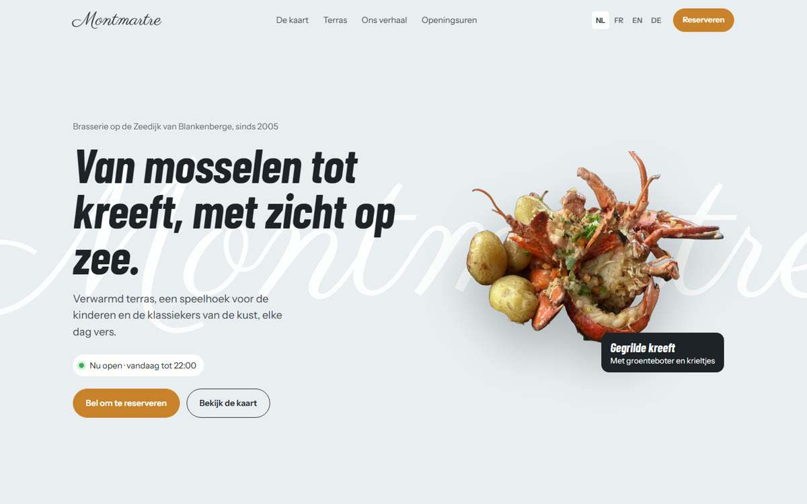
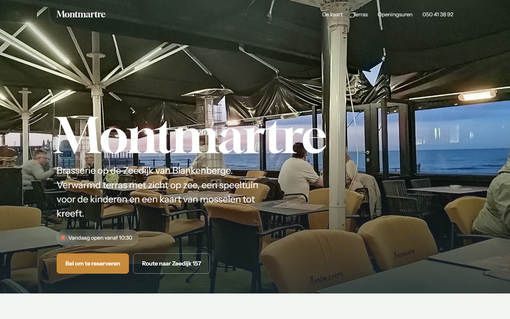

Twee versies om te bekijken

ModernUitgesneden gerechten, een kaart met rubrieken, het terras als bewegend beeld, in vier talen.
Bekijk deze versie
Bekijk deze versie

KlassiekGrote foto's van het terras en de gerechten, rustig en overzichtelijk.
Bekijk deze versie
Bekijk deze versie
Beide werken op gsm, tablet en computer. Op de gsm staan onderaan altijd de knoppen om te bellen of de route te openen.
Dit is pas een basis
We hebben de websites gemaakt met wat al publiek over u te vinden is: uw foto's, uw openingsuren en de beoordelingen van uw gasten. Alles kan nog veranderen:
- tekst, kleuren, volgorde en lettertypes, volledig naar uw smaak;
- de gerechten en de kaart zoals u ze werkelijk serveert, met of zonder prijzen;
- bij samenwerking maken we nieuwe, professionele foto's van uw gerechten en het terras, zodat alles er op zijn best uitziet;
- een eigen domeinnaam op uw naam, bijvoorbeeld brasseriemontmartre.be.
Wat het kost
300 €eenmalig: de volledige website, domeinnaam, koppeling met Google en Facebook
25 € / maandhosting, domein en aanpassingen: uren, foto's, suggesties van de dag
Extra, als u wil
| Optie | Prijs |
|---|---|
| Professionele fotoshootuw gerechten, het terras en het interieur, voor de website en sociale media | 100 € |
| Reservaties via de websiteformulier met datum, uur en aantal personen, rechtstreeks bij u via e-mail of WhatsApp | 50 € |
| Volledige kaart met prijzenen de suggesties van de dag, die u ons gewoon doorstuurt | 60 € |
| QR-code voor op tafelgasten scannen voor de kaart, de wifi of een reservatie | 20 € |
| Facebook en Instagram in dezelfde stijlprofielen opgezet en afgestemd op de website | 80 € |
| Sociale media elke maand2 tot 3 berichten per week met uw eigen foto's, u keurt alles goed via WhatsApp | 99 € / maand |
Prijzen zijn exclusief btw indien van toepassing. Alles is per stuk te kiezen; niets is verplicht.
Hoe het verloopt
- U kiest een versie en zegt wat anders moet.
- Wij passen alles aan en maken, als u wil, nieuwe foto's.
- De website gaat online op uw eigen domeinnaam, meestal binnen enkele dagen.
- Daarna stuurt u gewoon via WhatsApp wat moet veranderen, en wij zetten het erop.
Even praten?
Ik ben Martin en ik woon zelf in Blankenberge. Ik kom graag eens langs om alles te tonen, op een moment dat het u past.
Bel of stuur een WhatsApp